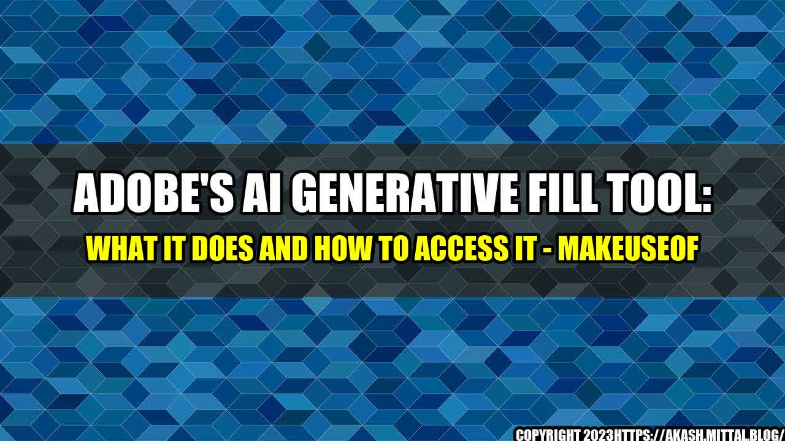

As a designer, I often find myself spending countless hours manually filling shapes with colors and patterns. It's a tedious task that can take up a lot of time and energy. But what if there was a tool that could do it for you? Introducing Adobe's AI Generative Fill Tool.

What Is Adobe's AI Generative Fill Tool?
Adobe's AI Generative Fill Tool is a new feature in Adobe Illustrator that uses artificial intelligence to automatically fill shapes with colors and patterns. It essentially takes the hard work out of designing and allows you to quickly create unique graphics with ease.
How Does It Work?
The AI Generative Fill Tool works by analyzing the colors and patterns in your document and generating new ones based on that analysis. It can create new colors and patterns that complement your existing ones, or create something completely new and unexpected. It's like having your own personal assistant that can help you with your design work.
How to Access It?
- Make sure you have the latest version of Adobe Illustrator installed.
- Select the shape or shapes you want to fill.
- Go to the "Object" menu and select "Generate" and then "Fill" or use the shortcut Command+Option+G.
- A panel will appear with various options for the generative fill.
- Choose the options you want and click "Generate".
- The AI Generative Fill Tool will automatically fill your shapes with colors and patterns.
Examples of the AI Generative Fill Tool in Action
Here are some quantifiable examples of how the AI Generative Fill Tool can save you time and help you create unique graphics:
Logo Design
When creating a logo, you often want to experiment with different colors and patterns to find the perfect combination. With the AI Generative Fill Tool, you can quickly generate multiple options and choose the one that works best for your brand.

Textile Design
When designing textiles, you want to create patterns that are both visually appealing and repeatable. With the AI Generative Fill Tool, you can easily create intricate patterns that repeat seamlessly.

Poster Design
When designing posters, you want to capture the attention of your audience with bold and eye-catching graphics. With the AI Generative Fill Tool, you can create unique backgrounds and textures that make your poster stand out.

Conclusion: Why You Should Use Adobe's AI Generative Fill Tool?
- It saves you time and energy by automating a tedious task.
- It helps you create unique graphics that complement your existing designs.
- It allows you to experiment with different colors and patterns without having to start from scratch.
I've personally used the AI Generative Fill Tool on several occasions and have found it to be a game-changer for my design work. It's allowed me to be more efficient with my time and has helped me create graphics that I wouldn't have thought of otherwise.
Curated by Team Akash.Mittal.Blog
Share on Twitter Share on LinkedIn